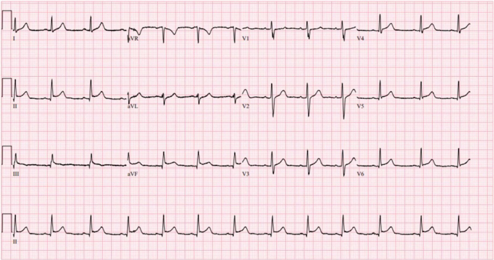
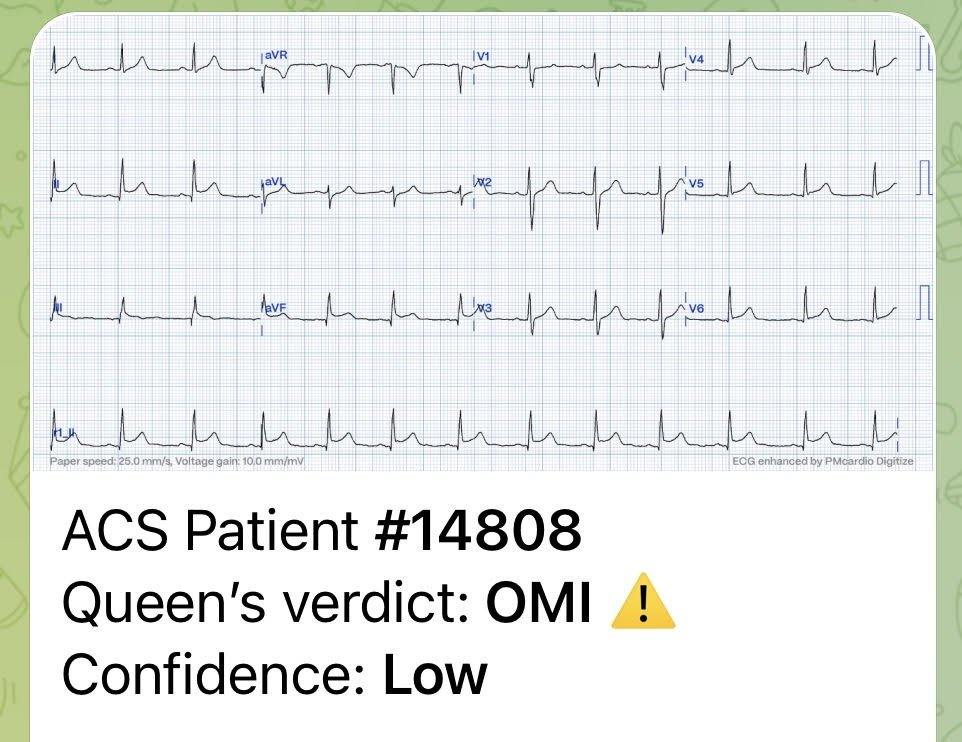
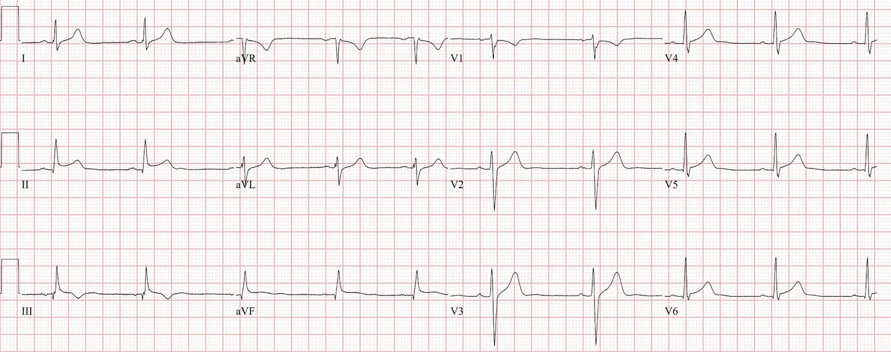
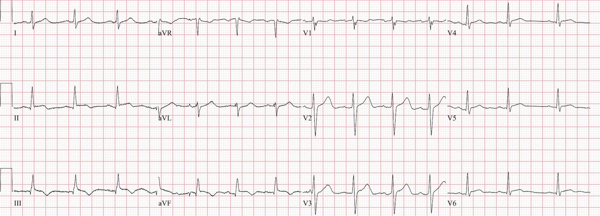
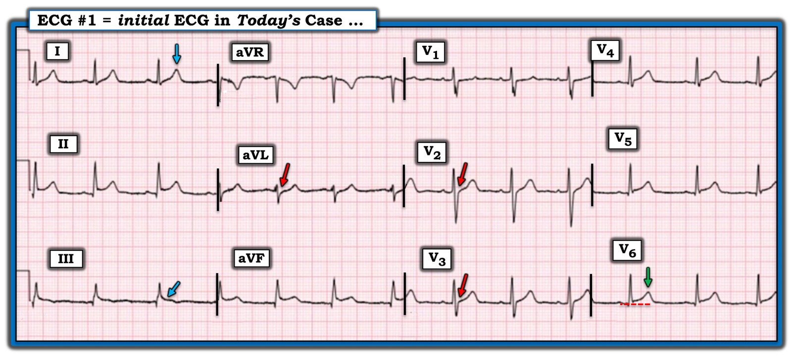
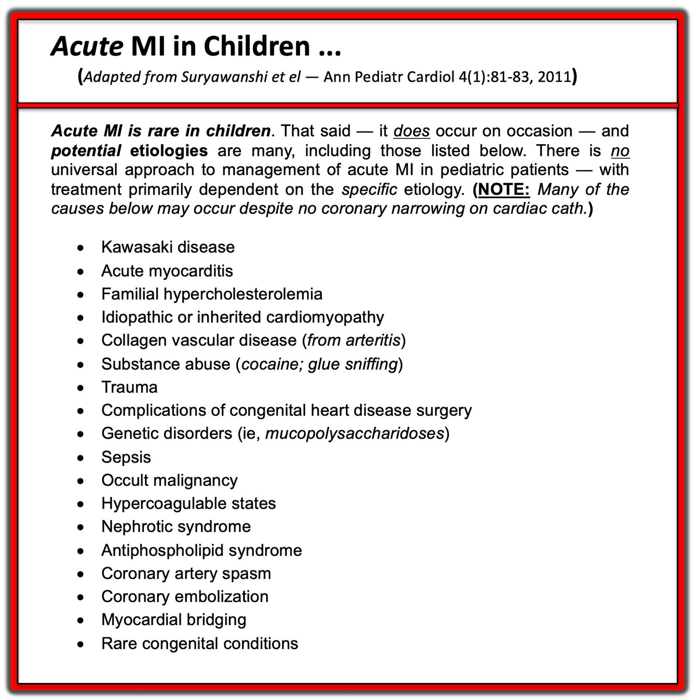

05/12/2023 — OMI ở bệnh nhân nhi? Thiếu niên vẫn có thể bị tắc mạch vành cấp, đừng vội gạt bỏ ý nghĩ này.
Bản dịch tiếng Việt của bài "OMI in a pediatric patient? Teenagers do get acute coronary occlusion, so don’t automatically dismiss the idea." – Dr. Smith’s ECG Blog. Giữ nguyên toàn bộ 7 hình ảnh của bản gốc.
Hội chứng vành cấp ở bệnh nhân nhi?
Bài viết của Kirsten Morrissey, MD, có chỉnh sửa bởi Bracey,
Grauer, Meyers và Smith
Một thiếu niên lớn tuổi được chuyển đến từ một bệnh viện tuyến ngoài
với troponin huyết thanh tăng và điện tâm đồ có ST chênh lên.
Bệnh nhân béo phì, tiền sử bệnh chỉ có viêm amidan tái phát đã phẫu thuật cắt amidan và nạo VA, ngoài ra khỏe mạnh và đã tiêm chủng đầy đủ. Bệnh nhân kể đau ngực 1,5 ngày, lúc đầu đau sau xương ức, kiểu bóp nghẹt, làm bệnh nhân thức giấc, thỉnh thoảng lan lên bên phải cổ. Cơn đau được mô tả là liên tục, tăng khi hít sâu và khi gắng sức, đôi khi đau nhói. Bệnh nhân thỉnh thoảng chóng mặt nhưng không ngất, không ốm gần đây, không sốt gần đây, không chấn thương, không bị ve cắn, không phù chân, không có triệu chứng nhiễm virus. Bệnh nhân phủ nhận dùng ma túy hoặc rượu. Tiền sử gia đình đáng chú ý có bệnh động mạch vành (CAD) sớm.
Điện tâm đồ được ghi khi bệnh nhân đến khoa cấp cứu (ED) của chúng tôi:


Bạn có chuyển bệnh nhân nhi này đi PCI cấp cứu không?
Thăm dò tại bệnh viện chuyển đến cho thấy troponin I tăng ở mức 18,1 ng/mL (giới hạn trên bình thường (ULN) <0,01), D-dimer tăng ở ngưỡng giới hạn 0,56 mg/L, không có bằng chứng lâm sàng nào của một quá trình nhiễm trùng. Bạch cầu (WBC), CRP và số lượng tiểu cầu trong giới hạn bình thường, xét nghiệm panel virus hô hấp âm tính, X-quang ngực không có dấu hiệu cấp tính, kích thước tim và bóng tim bình thường. Điện tâm đồ ghi tại cơ sở chuyển đến được báo cáo là có ST chênh lên ở các chuyển đạo II, III và aVF.
Khi đến, bệnh nhân có dấu hiệu sinh tồn bình thường (kể cả nhiệt độ) và nhìn chung trông ổn, dù hơi lo lắng, và vẫn kể có đau ngực và nặng ngực từng lúc.
Smith: điện tâm đồ này khá kinh điển cho viêm cơ tim hoặc viêm màng ngoài tim.
–Có ST chênh lên (STE) ở thành dưới và thành bên, điển hình của viêm cơ-màng ngoài tim hoặc OMI dưới-bên.
–Sóng T dẹt so với STE, điển hình của viêm cơ-màng ngoài tim.
–STE ở chuyển đạo II lớn hơn ở III, điển hình của viêm màng ngoài tim. Đây là hình ảnh điển hình của viêm màng ngoài tim. —Không có ST chênh xuống (STD) soi gương ở aVL. Chúng tôi đã chứng minh rằng OMI thành dưới hầu như luôn có STD ở aVL, còn viêm màng ngoài tim thì không bao giờ. Nhưng viêm cơ tim thường trông y hệt OMI!
–Chỉ có vài sóng J gợi ý tái cực sớm, đây là một khả năng khác. Xem ca này để hiểu vì sao cần biết rằng điều mà phần lớn mọi người nghĩ là viêm màng ngoài tim thực ra là tái cực sớm.
31 Year Old Male with RUQ Pain and a History of Pericarditis. Submitted by a Med Student, with Great Commentary on Bias! (Nam 31 tuổi đau hạ sườn phải và có tiền sử viêm màng ngoài tim. Do một sinh viên y khoa gửi, kèm bình luận tuyệt vời về thiên kiến!)
—Có một chút sóng T đảo ngược ở chuyển đạo III. Đây là điển hình của diễn tiến viêm màng ngoài tim.
–Đoạn PR chênh xuống rất ít, dấu hiệu vốn sẽ giúp khẳng định viêm màng ngoài tim.
–Có dấu hiệu Spodick nhưng một nghiên cứu gần đây của Amal Mattu cho thấy dấu hiệu này không đáng tin cậy như từng được nghĩ.
Nhưng tất nhiên chẩn đoán viêm màng ngoài tim là tự chuốc lấy rủi ro!
Hãy xem ca này:
You Diagnose Pericarditis at your Peril (at the Patient’s Peril!) (Chẩn đoán viêm màng ngoài tim là tự chuốc rủi ro (rủi ro cho bệnh nhân!))
Bạn cũng có thể sai lầm khi nghĩ tái cực sớm là viêm màng ngoài tim:
A teenager with chest pain, a troponin below the limit of detection, and “benign early repolarization” (Một thiếu niên đau ngực, troponin dưới giới hạn phát hiện và “tái cực sớm lành tính”)
Đây là một ca viêm cơ tim kinh điển khác trông Y HỆT OMI cấp:
A 20-something with intermittent then acute chest pain (Người ngoài 20 tuổi đau ngực từng lúc rồi đau ngực cấp)
Smith đã gửi điện tâm đồ này tới hệ thống AI Queen of Hearts của PM Cardio và đây là kết quả trả lời:


Queen đã bị đánh lừa ở ca này, nhưng với độ tin cậy thấp. Hiện tại đây là phiên bản đầu tiên, và phiên bản đó (1) chỉ được dạy về OMI mọi loại, dù đang diễn ra hay đã tái tưới máu, cấp hay bán cấp (dù Queen chỉ cho kết quả là OMI hoặc không OMI kèm mức độ tin cậy).
Phiên bản 2 chưa được phát hành, nhưng chúng tôi đã dạy phiên bản 2 nhận biết viêm cơ tim và viêm màng ngoài tim bằng khá nhiều ví dụ. Chúng tôi chưa biết nó sẽ hoạt động thế nào.
Tuy nhiên, điện tâm đồ này kinh điển cho viêm cơ-màng ngoài tim, nên khi Phiên bản 2 ra mắt, tôi tin Queen sẽ đọc đúng ca này. Chúng ta sẽ chờ xem.
Ứng dụng Queen of Hearts PM Cardio hiện đã có tại Liên minh châu Âu (được chứng nhận CE) trên App Store và Google Play.
Với người Mỹ, các bạn cần chờ FDA. Nhưng trong lúc chờ đợi:
BẠN CÓ CƠ HỘI ĐƯỢC TRUY CẬP SỚM BOT AI PM Cardio!! (ỨNG DỤNG AI OMI CỦA PM CARDIO)
Nếu bạn muốn bot này giúp chẩn đoán sớm OMI và cứu bệnh nhân cùng cơ tim của họ, bạn có thể đăng ký nhận phiên bản beta sớm của bot tại đây. Bot chưa được phát hành, nhưng đây là cách để bạn có tên trong danh sách.
https://share-eu1.hsforms.com/18cAH0ZK0RoiVG3RjC5dYdwfyfsg (biểu mẫu đăng ký truy cập sớm)
Ca bệnh tiếp diễn
Xét nghiệm lặp lại cho thấy troponin I độ nhạy cao >16.000 ng/L, CRP tăng nhẹ 8,4 mg/L và bạch cầu bình thường 8,8. Bác sĩ tim mạch nhi làm siêu âm tim tại giường ở khoa cấp cứu, ước tính EF 60%, không có tràn dịch màng ngoài tim và không có rối loạn vận động thành khu trú.
Điện tâm đồ được ghi lại khi bác sĩ tim mạch người lớn được mời đánh giá bệnh nhân để PCI cấp cứu:


Bệnh nhân được đưa vào phòng thông tim (cath lab)
với bác sĩ tim mạch người lớn, kết quả cho thấy động mạch vành bình thường, không có bằng chứng nhồi máu cơ tim do tắc.
Smith: đây là việc làm thận trọng!!
Bệnh nhân được bắt đầu dùng colchicine vì nghĩ tới viêm cơ tim và được xuất viện sau một đợt nằm viện ngắn, không biến cố.
Điện tâm đồ cuối cùng được ghi vào ngày nằm viện thứ 2:


Những điểm giảng dạy
– Cần thiết phải cân nhắc hội chứng vành cấp (ACS) ở mọi nhóm tuổi. Dù ít gặp hơn ở bệnh nhân trẻ, nhồi máu cơ tim do tắc vẫn có thể xảy ra và đòi hỏi những can thiệp sớm giống như ở bệnh nhân lớn tuổi.
– – Viêm màng ngoài tim và
viêm cơ tim nên là chẩn đoán loại trừ. Troponin huyết thanh tăng và các thay đổi ST, đặc biệt là những thay đổi phân bố theo vùng giải phẫu trên điện tâm đồ, nên được coi là OMI cho tới khi chứng minh được điều ngược lại.
– Dù ACS có thể ít gặp hơn ở trẻ em, điều quan trọng là cân nhắc các yếu tố nguy cơ có thể làm OMI dễ xảy ra hơn (ví dụ: rối loạn huyết học như bệnh hồng cầu hình liềm hay hội chứng kháng phospholipid, tiền sử gia đình có CAD hoặc tăng cholesterol máu, tiền sử bệnh lý mạch máu như bệnh Kawasaki, MIS-C, tiền sử phẫu thuật tim, v.v.)
Tài liệu tham khảo
Law YM, Lal AK, Chen S, Čiháková D, Cooper LT
Jr, Deshpande S, Godown J, Grosse-Wortmann L, Robinson JD, Towbin JA; American
Heart Association Pediatric Heart Failure and Transplantation Committee of the
Council on Lifelong Congenital Heart Disease and Heart Health in the Young and
Stroke Council. Diagnosis and Management of Myocarditis in Children: A
Scientific Statement From the American Heart Association. Circulation. 2021 Aug
10;144(6):e123-e135. doi: 10.1161/CIR.0000000000001001. Epub 2021 Jul 7. Erratum
in: Circulation. 2021 Aug 10;144(6):e149. PMID: 34229446. (Chẩn đoán và xử trí viêm cơ tim ở trẻ em: tuyên bố khoa học của Hội Tim mạch Hoa Kỳ)
Newburger JW, Takahashi M, Burns JC. Kawasaki
Disease. J Am Coll Cardiol. 2016 Apr 12;67(14):1738-49. doi:
10.1016/j.jacc.2015.12.073. PMID: 27056781. (Bệnh Kawasaki)
Silva Andrade B, Siqueira S, de Assis Soares
WR, de Souza Rangel F, Santos NO, Dos Santos Freitas A, Ribeiro da Silveira P,
Tiwari S, Alzahrani KJ, Góes-Neto A, Azevedo V, Ghosh P, Barh D. Long-COVID and
Post-COVID Health Complications: An Up-to-Date Review on Clinical Conditions
and Their Possible Molecular Mechanisms. Viruses. 2021 Apr 18;13(4):700. doi:
10.3390/v13040700. PMID: 33919537; PMCID: PMC8072585. (COVID kéo dài và các biến chứng sức khỏe sau COVID: tổng quan cập nhật về các tình trạng lâm sàng và cơ chế phân tử có thể có)
Zhang QY, Xu BW, Du JB. Similarities and
differences between multiple inflammatory syndrome in children associated with
COVID-19 and Kawasaki disease: clinical presentations, diagnosis, and
treatment. World J Pediatr. 2021 Aug;17(4):335-340. doi: 10.1007/s12519-021-00435-y.
Epub 2021 May 20. PMID: 34013488; PMCID: PMC8134825. (Điểm giống và khác nhau giữa hội chứng viêm đa hệ thống ở trẻ em liên quan COVID-19 và bệnh Kawasaki: biểu hiện lâm sàng, chẩn đoán và điều trị)

===================================
BÌNH LUẬN CỦA TÔI, bởi KEN GRAUER, MD (5/12/2023):
===================================
Một ca thú vị của BS. Morrissey và BS. Bracey — về việc cân nhắc ACS (hội chứng vành cấp — Acute Coronary Syndrome) ở một bệnh nhân trẻ tuổi.
- Dù một thiếu niên lớn tuổi bị thừa cân nhìn chung sẽ biểu hiện các tiêu chuẩn điện tâm đồ tương tự người lớn — ca hôm nay dù vậy vẫn đặt ra câu hỏi: ĐÂU là các căn nguyên có thể gây nhồi máu cơ tim cấp ở một bệnh nhân nhi ?
- Để ôn lại, trong Hình 2 — tôi đã lập một danh sách các nguyên nhân có thể gây nhồi máu cơ tim cấp cần cân nhắc ở lứa tuổi nhi.
Về ca hôm nay — mối lo ngại quan trọng được đặt ra là liệu thiếu niên này, người ban đầu đến viện không có bằng chứng gợi ý nhiễm virus cấp — có nên được đưa vào phòng thông tim hay không?
- Cuối cùng, bệnh nhân đã được thông tim — cho thấy các động mạch vành thông suốt. Dù vậy — tôi muốn bổ sung vào phần bàn luận của BS. Morrissey và BS. Bracey một số gợi ý tinh tế cho thấy điện tâm đồ (mà tôi đã đánh dấu trong Hình 1) ban đầu hôm nay gợi ý viêm cơ tim cấp nhiều hơn là OMI.


Suy nghĩ của tôi về điện tâm đồ ở Hình 1:
Nhịp ở điện tâm đồ #1 là loạn nhịp xoang. Như BS. Morrissey và BS. Bracey đã nêu — có ST chênh lên ở các chuyển đạo thành dưới, làm dấy lên lo ngại OMI cấp ở bệnh nhân này, người đã thức giấc một ngày trước đó vì CP (đau ngực — Chest Pain) dữ dội. Những lý do khiến tôi nghi ngờ viêm cơ tim cấp (ngay cả trước khi có kết quả troponin tăng rất cao) — gồm:
- THỐNG KÊ — Cụ thể là ở nhóm tuổi thiếu niên/người trẻ trước đó khỏe mạnh, viêm cơ tim cấp phổ biến hơn nhiều so với nhồi máu cấp. Dù vậy — nhồi máu cơ tim cấp vẫn thỉnh thoảng xảy ra ở những bệnh nhân trẻ này, nên chỉ riêng thống kê thì không đủ để loại trừ khả năng này.
- LƯU Ý: Chúng tôi đã nhiều lần cho thấy trên Dr. Smith’s ECG Blog rằng đôi khi khó đến mức nào để phân biệt viêm cơ tim cấp với OMI cấp dựa trên dấu hiệu điện tâm đồ và bệnh sử lâm sàng (Xem Bình luận của tôi trong các bài ngày 21 tháng Bảy năm 2019 — ngày 10 tháng Mười Hai năm 2019 — ngày 25 tháng Tư năm 2023 — ngày 31 tháng Mười Hai năm 2019 — và ngày 10 tháng Một năm 2020).
Nhưng ngoài ra — tôi thấy điện tâm đồ #1 không “trông” giống một OMI cấp …
- Khi có ST chênh lên ở cả 3 chuyển đạo thành dưới — dấu hiệu ST chênh lên ở chuyển đạo II > III sẽ gợi ý “thủ phạm” là LCx (hơn là RCA). Nếu đúng như vậy — tôi thường sẽ chờ đợi thấy ST chênh lên ở các chuyển đạo bên cao, chứ không phải sóng T nhọn với đoạn ST đẳng điện ở chuyển đạo I (mũi tên XANH ở chuyển đạo này) — cùng đoạn ST đẳng điện ở chuyển đạo aVL.
- Sóng T nhọn ở chuyển đạo I và II (trong khi không có dù chỉ một gợi ý sóng T dương ở chuyển đạo III) — rõ ràng gợi ý viêm màng ngoài tim/viêm cơ tim nhiều hơn là OMI cấp (tức là, trong viêm màng ngoài tim, chuyển đạo II có xu hướng giống chuyển đạo I hơn là giống chuyển đạo III).
- Phần lớn các trường hợp có thủ phạm là LCx — sẽ có bằng chứng OMI thành sau đi kèm — nhưng đoạn ST ở các chuyển đạo V2, V3 lại dốc lên và hơi chênh lên thay vì chênh xuống (mũi tên ĐỎ ở các chuyển đạo này).
- Thực tế — có ST chênh lên tại điểm J ở 5 trong 6 chuyển đạo trước ngực (tức là, ở các chuyển đạo từ V2 đến V6), một dấu hiệu phù hợp với viêm màng ngoài tim/viêm cơ tim hơn nhiều so với OMI cấp (nhất là khi tỷ lệ ST/sóng T ở chuyển đạo V6 có vẻ tăng).
- Đoạn ST ở chuyển đạo aVL chênh xuống không quá mức tối thiểu — điều mà tôi sẽ không chờ đợi khi không có chút ST chênh lên nào ở chuyển đạo bên cao còn lại ( = chuyển đạo I).
- ĐIỀU CỐT LÕI: Những điều trên rõ ràng là một loạt dấu hiệu điện tâm đồ “mềm” mà theo tôi gợi ý sự phân bố thay đổi ST-T ít mang tính “giải phẫu” hơn so với mức tôi chờ đợi ở OMI cấp. Các dấu hiệu điện tâm đồ hơi không điển hình cho OMI cấp ở một thiếu niên rõ ràng làm tăng nghi ngờ viêm cơ tim cấp.
=============================
Nhồi máu cơ tim cấp ở trẻ em:
- Tôi liệt kê trong Hình 2 — các nguyên nhân có thể gây nhồi máu cơ tim cấp cần cân nhắc ở lứa tuổi nhi (Suryawanshi và cs. — Ann Pediatr Cardiol 4(1):81-83, 2011).
- Tôi đã liệt kê các nguyên nhân có thể gây viêm màng ngoài tim cấp trong phần Bình luận của tôi ở cuối trang của bài ngày 11 tháng Sáu năm 2022 trên Dr. Smith’s ECG Blog.
- Các nguyên nhân có thể gây viêm cơ tim cấp (hoặc viêm màng ngoài tim-cơ tim cấp) — tương tự các nguyên nhân gây viêm màng ngoài tim cấp đơn thuần.

